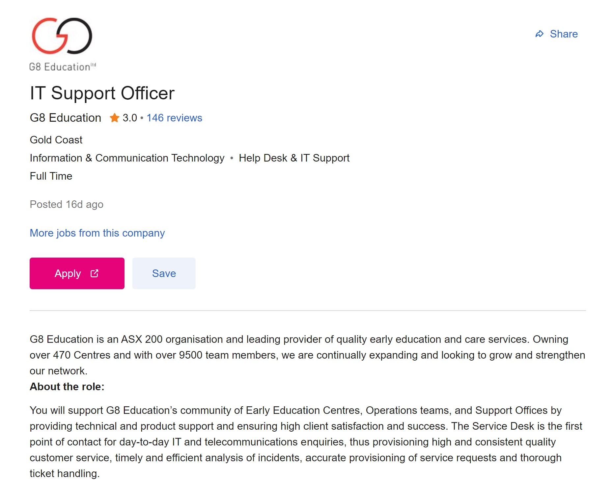

As basic as it might seem, my ideal job is in a kind of ‘IT Support Officer’ role. I enjoy being in a customer facing role and think that this would be a great suit for me. The below is a copy of a Job that I would like to apply to once I finish my degree.
https://www.seek.com.au/job/53734489?type=promoted#searchRequestToken=54ab228c-c32d-4754-a601-0b94511fe165
This job is ideal for me because I really enjoy anything that is customer facing. This job is an IT Support Officer role. It involves being the first point of contact for the end users and logging their tickets and attempting to solve their problems. There is only a low level of skills required for this job as there are higher support teams involved within the business for more involved/technical problems. This seems like the perfect role to begin my Career in, with plenty of learning to occur and a path forward to advance up the ladder. I feel like I don’t currently have the necessary skills required for this job. I would need to understand troubleshooting network issues as well as have an ITIL certification. I currently have none of these hence why I have begun this course. I also plan to do other online learning and education along the way to ensure that I stand out from the pack when it comes to graduation. When I choose my electives, I plan to choose Cloud Computing to give myself a greater knowledge of this are as well. By the time I finish my degree I believe that I will have all the skills necessary to effectively perform in this role.
<<